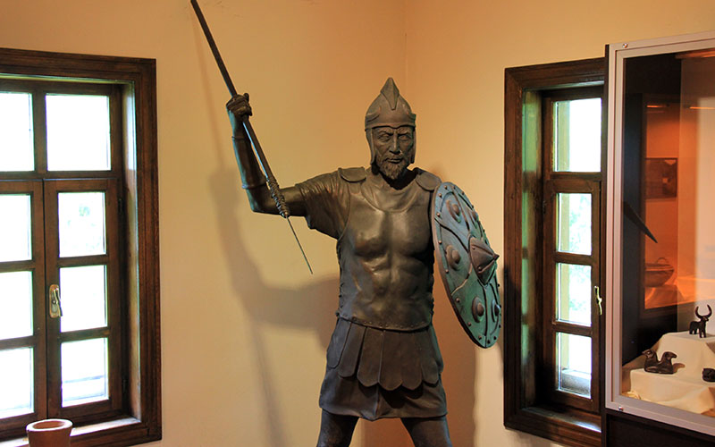

1941'de ilk kez İsmail Kılıç Kökten başkanlığındaki bir heyet tarafından araştırılmaya başlanan vadide çok
sayıda tarih öncesi mağara, sığınak ve düz yerleşim yeri keşfedilmiştir.[1] Geçmişi Eski Taş Çağına dek
uzanan buluntular arasında taş yontma yöntemiyle elde edilen ok ve mızrak uçları ile baltalar, kesici ve
kazıyıcı aletler de yer almaktadır.[1] Eski Taş Çağı aletlerinin yanı sıra Tunç Çağına ait çömlek, küpe,
bilezik ve iğne benzeri gereçler de bulunmuştur.[1] Bu buluntuların biçim ve teknikleri Orta Anadolu
seviyesinde olmakla birlikte kemikten elde edilmiş aletler Orta Anadolu ve Batı Anadolu'da bulunan
benzerlerinde ileri bir seviyededir.[1]
Çınarcık Vadisi ve Fındıcak Vadisi'nin birleştiği noktada yer alan ve Delikli Kaya adı ile bilinen kaya
kütlesinde keşfedilen basamakların teknik ve biçimsel incelemeleri ile bu noktada bir Frig kalesi bulunduğu
saptanmıştır.[1] Bu kalenin ufak çaptaki bir uç kalesi olduğu ve haberleşme amacıyla kullanıldığı
düşünülmektedir.[1] Yine vadide bir Hitit yolu da tespit edilmiş, bu yolun üst düzey Hitit yöneticileri
tarafından seremoni yolu olarak kullanıldığı tahmin edilmektedir.[1]
Ayrıca vadide Orta Taş Çağı ve Erken Tunç Çağı ile Hititlere ait birçok bulgu da araştırmalar sırasında elde
edilmiştir. Vadide elde edilen buluntular Samsun Arkeoloji ve Etnografya Müzesinde muhafaza edilmektedir.[1]
Vadide yer alan mağaralarda keşfedilen ve MÖ 60.000 ila MÖ 15.000 yılları arasına tarihlendirilen Eski Taş
Çağı katmanı Karadeniz Bölgesi'nin en eski yerleşim yeridir. Mağara yerleşiminde yaşayan bu ilk insanlar
topluluk bilinci gelişmemiş ve henüz üretici pozisyonuna geçmemiş topluluklardı.[2]

1977 yılında sit alanı ilan edilen Tekkeköy Mağaraları'nda son yıllarda turizm ekonomisine kazandırılması
amacıyla çalışmalar yapılmış[3] ve 2013 yaz turizm sezonunda ziyaretçilere açılmıştır.[4] Turizme açıldıktan
sonra mağaralar Fransız arkeologların da dikkatini çekmiştir.[5] 360.000m2'lik alana bir yayılan mağaraların
yalnızca 96.000m2'lik bir kısmı ziyaretçilere açılmış olsa da gelecek dönemde tüm alanların düzenlemesinin
yapılması planlanmaktadır.[6] Ayrıca mağaraların çevresinde Hitit yolu, Frig kalesi kalıntıları ve eski Rum
evleri de bulunmaktadır.[5] Hitit yolu ve Frig kalesi kalıntıları için bir çalışma yapılmamakla beraber eski
Rum evlerinin restore edilerek ziyaretçilere açılması planlanmaktadır. Bu evlerin üçü restore edilmiş olup
yalnızca biri faaliyettedir.
1 Mart 2014 tarihinde Tekkeköy Mağaraları Arkeoloji Vadisi içerisindeki üç tescilli eski Rum evinden
birisinin restore edilmesiyle oluşturulan Tekkeköy Mağaraları Arkeoloji Vadisi Müze Evinde mağara ve
çevresindeki hayata dair malzemeler, mağaralardaki kazılarda ele geçirilen çanak çömlek parçaları ve
heykeller yer almaktadır.[8] Türkiye'nin ilk imitasyon müzesi olan[9] müze evin bu adla bilinmesinin nedeni
sergilenen malzemelerin buluntular temel alınarak birebir benzerlerinin müze için özel olarak
üretilmesidir.[10][11] Müzenin yıllık ziyaretçi ortalaması 180 bin kişidir.
Haziran 2017'den itibaren yine vadideki tarihî evlerden birinin restore edilmesiyle projelendirilen Ekolojik
Oyuncak Müzesinin çalışmaları devam ediyor olup Eylül 2018'de açılması plânlanmaktadır.